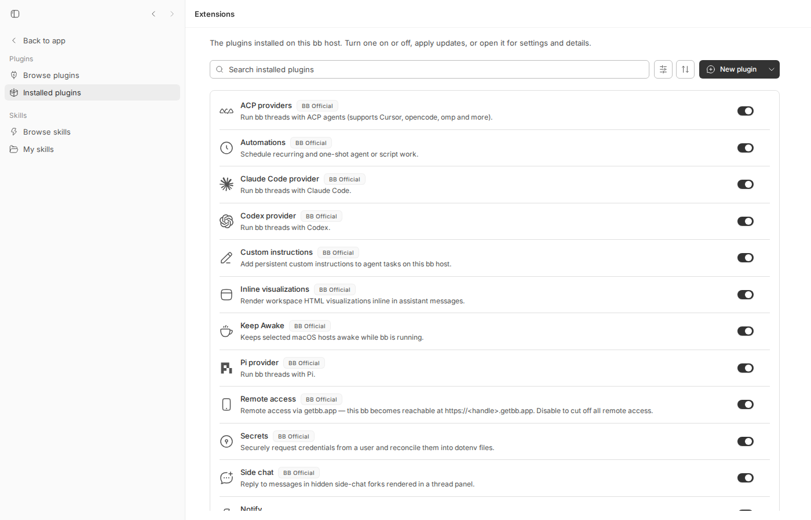
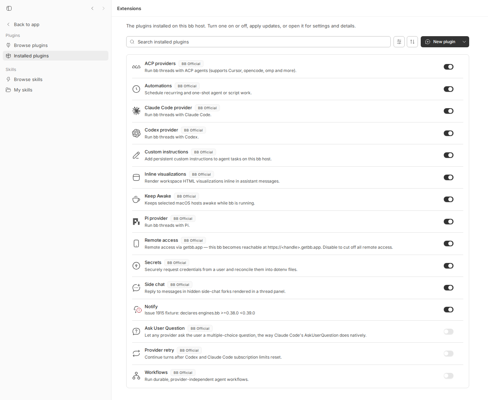
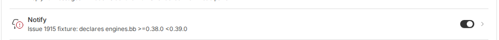
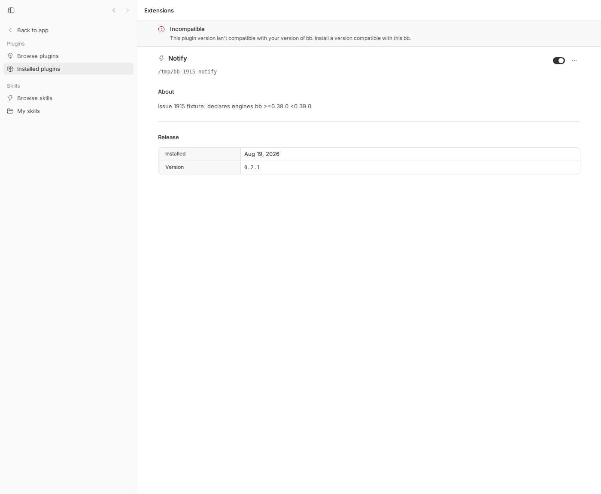

#1915 · Incompatible plugins unload silently — no error, warning, log line, or startup surface across a minor upgrade
Verdict: REPRODUCED · Root-cause confidence: high
1. TL;DR
A plugin that declares an engines.bb range (e.g. >=0.38.0 <0.39.0) stops loading as soon as the bb host is upgraded past that range. The server computes the right verdict (status: "incompatible", statusDetail: "requires bb >=0.38.0 <0.39.0, this is 0.39.0") and stores it in memory, but it never logs it: every successfully loaded plugin gets a plugin <id>@<v> loaded info line and every factory crash gets a plugin <id> failed to load: … warning, yet the pre-factory failure branch (failBeforeFactory in plugin-runtime.ts) only calls setStatus() and returns. Nothing in the app volunteers the state either: the home/thread UI shows no banner or badge, the Extensions nav has no indicator, and the only visible hint is a small red dot on the plugin's logo inside Extensions → Installed plugins (the row's toggle still reads ON). The verdict is only discoverable by explicitly asking (bb plugin list, GET /api/v1/plugins, or opening the plugin's detail page). The plugin's contributions (commands, tools, services, providers) simply vanish. Reproduced live on a dev instance with BB_APP_VERSION=0.38.5 → 0.39.0 and with a failing vitest at the exact code path.
2. Claims vs findings
| Claim from the issue | Status | Evidence |
|---|---|---|
A plugin declaring bb >=0.38.0 <0.39.0 is unloaded on host 0.39.0 | Verified | checkEngineRange uses semver.satisfies(0.39.0, ">=0.38.0 <0.39.0") → false → failBeforeFactory("incompatible", …); live repro: notify@0.2.1 incompatible (requires bb >=0.38.0 <0.39.0, this is 0.39.0) |
| No error, no warning, no log line | Verified | Server log after restart as 0.39.0 contains 11 plugin …@… loaded lines and zero lines mentioning notify (grep -c notify dev.log → 0). Unit test: zero logger calls mention the plugin. |
| No startup surface / nothing volunteers it in the UI | Verified | Home screen and Extensions nav show nothing (1915-home-after.png). Only a small red dot on the logo in Installed plugins and a banner on the plugin's own detail page, both require navigating there. |
The plugin surface reports status: "incompatible" with a statusDetail naming the range when queried | Verified | GET /api/v1/plugins → {"status":"incompatible","statusDetail":"requires bb >=0.38.0 <0.39.0, this is 0.39.0"}; bb plugin list prints the same. |
| The plugin's underlying process may stay alive while only the binding is gone | Unverified (plausible) | Depends on the third-party plugin spawning an external process; not part of bb. bb's own bb.backgroundServices are never started for an incompatible plugin, so for bb-managed services the service and the plugin are the same truth. |
Same behavior for agent-proxy@0.2.1 | Unverified | Same code path; any plugin with a non-satisfied engines.bb behaves identically (the range check is manifest-only). |
{kind=link}
3. Environment
- bb commit
d81fee6f47178c75f6ecf23d80bb69c4a3e9e5c3(main, 2026-08-19); origin/main has no later commit touchingapps/server/src/services/pluginsor the plugin UI — not fixed. - Linux 7.0.0-29-generic (Ubuntu), node v24.18.0, pnpm workspace.
- Dev instance from this worktree: App
http://localhost:14376, Serverhttp://localhost:22376, host daemon:30376, data dir~/.bb-dev/projects-bb-.claude-worktrees-wf_d5c47f31-487-4-efa318f0401b(deleted at cleanup). Host version faked viaBB_APP_VERSION(dev builds default to0.0.0, which skips the engines gate entirely — seecheckEngineRange). - No real provider turns were needed.
4. Minimal reproduction
A. Unit test at the exact code path (fails on d81fee6f)
- Save issue-1915-silent-incompatible.test.ts to
apps/server/test/services/plugins/. - Run from
apps/server:pnpm exec vitest run test/services/plugins/issue-1915-silent-incompatible.test.ts - Expected: a log line mentions the plugin when the 0.39.0 service marks it incompatible. Actual: the status is
incompatiblewith the right detail, butafter.lines.filter(/notify/)is[]:RUN v4.1.1 /home/sawyer/projects/bb/.claude/worktrees/wf_d5c47f31-487-4/apps/server ❯ @bb/server test/services/plugins/issue-1915-silent-incompatible.test.ts (1 test | 1 failed) 1660ms × logs the load on 0.38.x but nothing at all when 0.39.0 marks it incompatible 1659ms ⎯⎯⎯⎯⎯⎯⎯ Failed Tests 1 ⎯⎯⎯⎯⎯⎯⎯ FAIL @bb/server test/services/plugins/issue-1915-silent-incompatible.test.ts > #1915 incompatible plugin after host upgrade > logs the load on 0.38.x but nothing at all when 0.39.0 marks it incompatible AssertionError: expected [] to not deeply equal [] Compared values have no visual difference. ❯ test/services/plugins/issue-1915-silent-incompatible.test.ts:108:26 106| // verdict exists is the in-memory status returned by plugins.list… 107| const mentions = after.lines.filter((l) => /notify/i.test(l)); 108| expect(mentions).not.toEqual([]); // <-- fails on d81fee6f | ^ 109| await after.service.stop(); 110| }); ⎯⎯⎯⎯⎯⎯⎯⎯⎯⎯⎯⎯⎯⎯⎯⎯⎯⎯⎯⎯⎯⎯⎯⎯[1/1]⎯ Test Files 1 failed (1) Tests 1 failed (1) Start at 15:05:34 Duration 3.33s (transform 922ms, setup 0ms, import 1.59s, tests 1.66s, environment 0ms)
/**
* Repro for get-bb/bb#1915: a plugin whose `engines.bb` range stops matching
* after a host upgrade is marked `incompatible` on startup, but the server
* writes no log line for it (unlike a successful load, which logs
* `plugin <id>@<v> loaded`, or a factory failure, which logs
* `plugin <id> failed to load: ...`).
*/
import { mkdtemp, mkdir, rm, writeFile } from "node:fs/promises";
import { tmpdir } from "node:os";
import { join } from "node:path";
import { afterEach, beforeEach, describe, expect, it } from "vitest";
import { createConnection, migrate, type DbConnection } from "@bb/db";
import type { Logger } from "@bb/logger";
import { createPluginService } from "../../../src/services/plugins/plugin-service.js";
import { createNoopTelemetryService } from "../../../src/services/system/telemetry.js";
function capturingLogger(): { logger: Logger; lines: string[] } {
const lines: string[] = [];
const push = (level: string) => (msg: unknown) => {
lines.push(`${level} ${String(msg)}`);
};
const logger = {
debug: push("debug"),
info: push("info"),
warn: push("warn"),
error: push("error"),
} as unknown as Logger;
return { logger, lines };
}
async function writeNotifyPlugin(dir: string): Promise<string> {
const rootDir = join(dir, "bb-plugin-notify");
await mkdir(rootDir, { recursive: true });
await writeFile(
join(rootDir, "package.json"),
JSON.stringify({
name: "bb-plugin-notify",
version: "0.2.1",
engines: { bb: ">=0.38.0 <0.39.0" },
bb: {
name: "Notify",
description: "Issue 1915 fixture.",
branding: { icon: "Zap" },
server: "./server.ts",
},
}),
);
await writeFile(
join(rootDir, "server.ts"),
`export default function plugin() {}`,
);
return rootDir;
}
function makeService(db: DbConnection, dataDir: string, appVersion: string) {
const { logger, lines } = capturingLogger();
const service = createPluginService({
telemetry: createNoopTelemetryService(),
db,
hub: {
getDaemonSessionIdForHost: () => null,
notifyPluginSignal: () => 0,
notifySystem: () => {},
},
logger,
dataDir,
appVersion,
loadTimeoutMs: 2000,
});
return { service, lines };
}
describe("#1915 incompatible plugin after host upgrade", () => {
let db: DbConnection;
let workDir: string;
beforeEach(async () => {
db = createConnection(":memory:");
migrate(db);
workDir = await mkdtemp(join(tmpdir(), "bb-1915-"));
});
afterEach(async () => {
await rm(workDir, { recursive: true, force: true });
});
it("logs the load on 0.38.x but nothing at all when 0.39.0 marks it incompatible", async () => {
const rootDir = await writeNotifyPlugin(workDir);
// bb 0.38.5: the plugin installs and loads; the server logs it.
const before = makeService(db, join(workDir, "data"), "0.38.5");
const installed = await before.service.installPath(rootDir);
expect(installed.status).toBe("running");
expect(before.lines).toContainEqual("info plugin notify@0.2.1 loaded");
await before.service.stop();
// bb 0.39.0 starts against the same database (= user upgraded bb).
const after = makeService(db, join(workDir, "data"), "0.39.0");
await after.service.start();
const entry = after.service.list().find((p) => p.id === "notify");
expect(entry?.status).toBe("incompatible");
expect(entry?.statusDetail).toBe(
"requires bb >=0.38.0 <0.39.0, this is 0.39.0",
);
// BUG: no log line mentions the plugin at all. The only place the
// verdict exists is the in-memory status returned by plugins.list().
const mentions = after.lines.filter((l) => /notify/i.test(l));
expect(mentions).not.toEqual([]); // <-- fails on d81fee6f
await after.service.stop();
});
});
B. Live instance (what the reporter saw)
- Create a fixture plugin (1915/repro/bb-plugin-notify/) at
/tmp/bb-1915-notify:{ "name": "bb-plugin-notify", "version": "0.2.1", "engines": { "bb": ">=0.38.0 <0.39.0" }, "bb": { "name": "Notify", "description": "Issue 1915 fixture: declares engines.bb >=0.38.0 <0.39.0", "branding": { "icon": "Bell" }, "server": "./server.ts" } } // server.ts export default function plugin(bb: any) { bb.log.info("notify fixture loaded"); } - Start a dev instance pretending to be bb 0.38.5 and install the plugin:
BB_APP_VERSION=0.38.5 scripts/bb-dev-app current eval "$(scripts/bb-dev-app env)" pnpm bb:dev plugin install /tmp/bb-1915-notify --yes pnpm bb:dev plugin list | grep -A1 notify
Output (and the server log):notify@0.2.1 running source: path:/tmp/bb-1915-notify [15:07:53] INFO: [server] [plugin:notify] notify fixture loaded [15:07:53] INFO: [server] plugin notify@0.2.1 loaded
- "Upgrade" bb: restart the same instance (same DB / data dir) as 0.39.0:
pnpm dev:stop BB_APP_VERSION=0.39.0 scripts/bb-dev-app current curl -s $BB_SERVER_URL/api/v1/system/version # {"currentVersion":"0.39.0",...} grep -n "plugin" ~/.bb-dev/launchers/<instance>/dev.log | grep -v plugin-sdkExpected: a warning such asplugin notify not loaded (incompatible): requires bb >=0.38.0 <0.39.0, this is 0.39.0.
Actual (every other plugin is logged;notifydoes not appear anywhere —grep -c notify dev.log→0):[15:10:06] INFO: [server] plugin automations@0.1.0 loaded [15:10:06] INFO: [server] plugin connect@0.1.0 loaded [15:10:06] INFO: [server] plugin custom-instructions@0.1.0 loaded [15:10:06] INFO: [server] plugin inline-vis@0.1.0 loaded [15:10:06] INFO: [server] plugin keep-awake@0.1.0 loaded [15:10:06] INFO: [server] plugin provider-acp@0.1.0 loaded [15:10:07] INFO: [server] plugin provider-claude-code@0.1.0 loaded [15:10:07] INFO: [server] plugin provider-codex@0.1.0 loaded [15:10:07] INFO: [server] plugin provider-pi@0.1.0 loaded [15:10:07] INFO: [server] plugin secrets@0.1.0 loaded [15:10:07] INFO: [server] plugin side-chat@0.1.0 loaded
- Only an explicit query reveals it:
$ pnpm bb:dev plugin list | grep -A1 notify notify@0.2.1 incompatible (requires bb >=0.38.0 <0.39.0, this is 0.39.0) source: path:/tmp/bb-1915-notify $ curl -s $BB_SERVER_URL/api/v1/plugins | jq '.plugins[] | select(.id=="notify")' {"id": "notify", "version": "0.2.1", "enabled": true, "status": "incompatible", "statusDetail": "requires bb >=0.38.0 <0.39.0, this is 0.39.0", "source": "path:/tmp/bb-1915-notify"}




statusDetail is not printed here; it is in the CLI/API).Repro files and logs: 1915/repro/ (test, fixture plugin, full dev logs for 0.38.5 and 0.39.0, CLI/API output, screenshot scripts, prototype diff).
5. Root cause
Mechanism. On server start, PluginService.start() → loadAll() → loadOne(row) for every installed row. loadOne reads the manifest and runs the engines gate:
// apps/server/src/services/plugins/plugin-runtime.ts
function failBeforeFactory(status: PluginRuntimeStatus, detail: string): void {
if (previous !== undefined) {
setStatus(row.id, "running", `reload failed: ${detail}`);
} else {
setStatus(row.id, status, detail); // <-- in-memory only, no logger call
}
}
...
const engineProblem = checkEngineRange(manifest) ?? checkPluginSdkRange(manifest);
if (engineProblem) {
failBeforeFactory("incompatible", engineProblem);
return; // <-- nothing else happens
}
Permalinks: failBeforeFactory, engines / artifact gate, checkEngineRange, setStatus / publishStatus.
setStatus writes to baseStatuses/statuses maps and notifies per-plugin status listeners (used for bb.sdk readiness), nothing more. Compare the two sibling outcomes that are logged: a successful load ends with logger.info(`plugin ${row.id}@${manifest.version} loaded`) (L1634) and a factory/host-artifact failure with logger.warn(`plugin ${row.id} failed to load: …`) (L1525, L1551). Every branch routed through failBeforeFactory — directory missing, manifest unreadable, engines.bb/engines.bbPluginSdk unsatisfied, packaged-builtin artifact problem — and the hungServices "degraded" branch are silent. Because loadOne returns before createPluginApi, the plugin registers no commands, tools, services, providers, or frontend bundle, so every surface that would normally show the plugin's contributions shows nothing instead — the "vanish" the reporter describes.
Why nothing ambient shows it. The app projects status into a single per-row signal (pluginRowSignal in plugin-status.ts) rendered as a small badge on the logo in InstalledPluginsTab ("a row earns at most one signal", comment) and as a banner on PluginDetail. There is no aggregate "N plugins need attention" indicator on the Extensions nav item, no toast on the plugins-changed broadcast, and bb status does not include plugin health. The CLI/API expose the status only on demand (bb plugin list, GET /api/v1/plugins).
History. The engines gate has been silent since it was introduced (plugin system #480 / marketplaces #636 added setStatus(row.id, "incompatible", engineProblem); return; with no log). failBeforeFactory later generalized that branch (#716) without adding one. Note that dev builds report 0.0.0 and skip the gate, so developers never see this path locally unless they set BB_APP_VERSION.
Deeper issue. Incompatibility is a persistent condition (it will recur on every start until the plugin or host changes), but it is modeled exactly like a transient runtime status: in-memory, un-logged, un-aggregated. Also, the installed-list row keeps the enable toggle ON for an incompatible plugin, which reads as "working" at a glance.
6. Proposed fix (first principles)
- Server (minimum, root-level): log every non-running outcome in
loadOne, i.e. insidefailBeforeFactoryand thehungServicesbranch, atwarn, mirroring the existing success/failure lines. Prototype (verified: the repro test passes with it; proposed-fix.diff):diff --git a/apps/server/src/services/plugins/plugin-runtime.ts b/apps/server/src/services/plugins/plugin-runtime.ts index 37c719add..6bfffbeef 100644 --- a/apps/server/src/services/plugins/plugin-runtime.ts +++ b/apps/server/src/services/plugins/plugin-runtime.ts @@ -1284,8 +1284,10 @@ export function createPluginRuntime(context: PluginRuntimeContext) { ): void { if (previous !== undefined) { setStatus(row.id, "running", `reload failed: ${detail}`); + logger.warn(`plugin ${row.id} reload failed (kept previous instance): ${detail}`); } else { setStatus(row.id, status, detail); + logger.warn(`plugin ${row.id} not loaded (${status}): ${detail}`); } } const hung = hungServices.get(row.id);Risk: none functionally; only log volume (one line per affected plugin per start/reload). Consider one aggregate line at the end ofloadAll()too:plugins: 11 loaded, 1 incompatible (notify), 0 errored. - App: surface an aggregate "needs attention" count from
plugins.list()(statusesincompatible/error/missing) on the Extensions nav item or as a dismissible banner on first load after the status appears; the data is already in thepluginsquery. Keep the existing per-row signal. Optionally renderstatusDetail(the actual range) in the detail banner instead of only the generic sentence. - CLI: make
bb status(or a newbb plugin doctor) print non-running plugins, so agents and scripts can discover the state without parsing the full list. Document in the CLI guide/skill per AGENTS.md. - Do not conflate plugin status with any external process the plugin manages — as the reporter notes, those are separate truths; the log line and banner should say "plugin not loaded: incompatible", nothing about services.
No HOST_DAEMON_PROTOCOL_VERSION bump is needed for (1); (2)/(3) add no wire fields if they reuse the existing status/statusDetail.
7. PR review
No open PRs are linked to this issue.
8. Related issues
- Same mechanism applies to
engines.bbPluginSdkmismatches (checkPluginSdkRange) and tomissing/manifest-error plugins — all silent for the same reason. - The reporter's companion report about
agent-proxy@0.2.1(same publisher) — same code path, no separate bb issue found.
9. Appendix
Commands run
git checkout d81fee6f && pnpm install --frozen-lockfile --prefer-offline && pnpm exec turbo run build cd apps/server && pnpm exec vitest run test/services/plugins/issue-1915-silent-incompatible.test.ts # fails (1915/repro/vitest-output.txt) BB_APP_VERSION=0.38.5 scripts/bb-dev-app current pnpm bb:dev plugin install /tmp/bb-1915-notify --yes && pnpm bb:dev plugin list pnpm dev:stop && BB_APP_VERSION=0.39.0 scripts/bb-dev-app current curl -s http://localhost:22376/api/v1/system/version grep -c notify ~/.bb-dev/launchers/projects-bb-.claude-worktrees-wf_d5c47f31-487-4/dev.log # 0 pnpm bb:dev plugin list ; curl -s http://localhost:22376/api/v1/plugins dev-browser --headless run shot-before.js / shot-installed.js / shot-row-zoom.js # screenshots # prototype fix applied, test re-run (passes), then reverted with git pnpm dev:stop; rm -rf ~/.bb-dev/<instance>; ss -ltn | grep -E ":14376|:22376|:30376" # ports free
Artifacts
- dev-0.38.5.log — full dev log while the plugin loaded (contains
plugin notify@0.2.1 loaded). - dev-0.39.0.log — full dev log after the upgrade (no
notifyline). - plugin-list-0.39.0.txt, plugin-list-json-notify.txt — CLI and API output after the upgrade.
- proposed-fix.diff — two-line server prototype that makes the repro test pass.
- Screenshots: home before, home after, Browse plugins before, installed before, installed after, row zoom, detail before, detail after.
{kind=link}
{kind=link}
{kind=link}
{kind=link}
{kind=link}
{kind=link}
{kind=link}